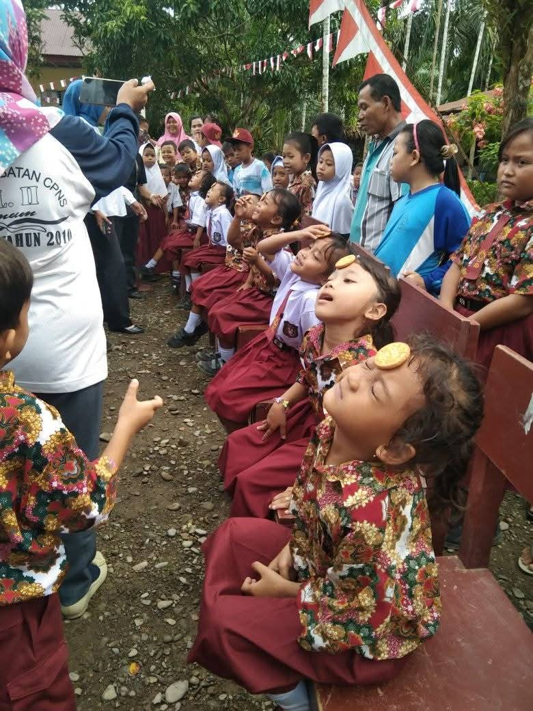
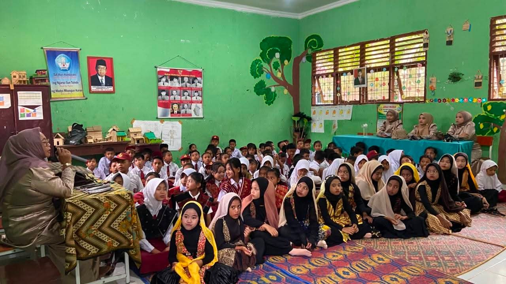

Literasi Pagi
Kegiatan literasi di SDN 058424 Sei Gelugur merupakan program rutin yang dilaksanakan setiap pagi sebelum proses pembelajaran dimulai. Program ini bertujuan untuk meningkatkan kemampuan membaca, memahami teks, serta menumbuhkan minat baca siswa sejak usia dini. Dalam pelaksanaannya, siswa diarahkan untuk membaca buku cerita, buku pengetahuan, maupun bahan bacaan lainnya yang sesuai dengan tingkat perkembangan mereka. Kegiatan ini menjadi salah satu upaya sekolah dalam memperkuat budaya literasi di lingkungan pendidikan dasar.

Perayaan 17 Agustus
Peringatan Hari Ulang Tahun Kemerdekaan Republik Indonesia ke-79 di SDN 058424 Sei Gelugur dilaksanakan dengan penuh antusiasme oleh seluruh warga sekolah. Berbagai kegiatan lomba seperti balap karung, makan kerupuk, dan estafet dilaksanakan sebagai bentuk perayaan sekaligus sarana pembelajaran nilai-nilai kebangsaan. Melalui kegiatan ini, sekolah berupaya menanamkan nilai nasionalisme, kerja sama, serta sportivitas kepada peserta didik sejak usia dini.

Kunjungan Mahasiswa ITBI
Dalam rangka kegiatan akademik, SDN 058424 Sei Gelugur menerima kunjungan dari mahasiswa Institut Teknologi dan Bisnis Indonesia (ITBI). Kunjungan ini dilakukan sebagai bagian dari proses observasi lapangan yang bertujuan untuk memahami secara langsung implementasi proses pembelajaran di tingkat sekolah dasar. Melalui kegiatan ini, mahasiswa mendapatkan kesempatan untuk mengamati aktivitas pembelajaran, interaksi guru dan siswa, serta kondisi lingkungan pendidikan. Selain itu, kegiatan ini juga menjadi bentuk kolaborasi antara institusi pendidikan tinggi dan sekolah dasar dalam mendukung peningkatan kualitas pendidikan.

Senam Pagi
SDN 058424 Sei Gelugur secara rutin melaksanakan kegiatan senam pagi setiap hari Jumat sebagai bagian dari program pembiasaan hidup sehat di lingkungan sekolah. Kegiatan ini bertujuan untuk meningkatkan kebugaran jasmani siswa, memperkuat konsentrasi belajar, serta menanamkan pentingnya menjaga kesehatan sejak usia dini. Seluruh siswa mengikuti kegiatan senam dengan bimbingan guru di halaman sekolah dalam suasana yang tertib dan menyenangkan. Program ini juga menjadi salah satu upaya sekolah dalam menciptakan lingkungan belajar yang sehat, aktif, dan positif.

Perlombaan Bakat Antar Kelas
SDN 058424 Sei Gelugur menyelenggarakan kegiatan lomba bakat antar kelas sebagai bagian dari upaya sekolah dalam mengembangkan potensi dan kreativitas siswa. Kegiatan ini memberikan kesempatan kepada siswa untuk menampilkan bakat mereka dalam berbagai bidang seperti seni musik, tari, pidato, dan keterampilan lainnya. Selain sebagai ajang kompetisi, kegiatan ini juga bertujuan untuk menumbuhkan rasa percaya diri, sportivitas, serta mempererat kebersamaan antar siswa di lingkungan sekolah. Dengan adanya kegiatan ini, diharapkan setiap siswa dapat lebih termotivasi untuk mengembangkan bakat dan minat yang dimiliki.

Merayakan Maulid Nabi
SDN 058424 Sei Gelugur menyelenggarakan peringatan Maulid Nabi Muhammad SAW sebagai bagian dari kegiatan keagamaan sekolah yang bertujuan untuk memperkuat karakter religius peserta didik. Kegiatan ini diisi dengan pembacaan shalawat, ceramah agama, serta berbagai aktivitas yang menanamkan nilai-nilai keteladanan Rasulullah SAW. Melalui peringatan ini, diharapkan siswa dapat memahami dan meneladani akhlak mulia Nabi Muhammad SAW dalam kehidupan sehari-hari, baik di lingkungan sekolah maupun di luar sekolah. Kegiatan ini juga menjadi sarana mempererat kebersamaan seluruh warga sekolah dalam suasana religius dan penuh makna..